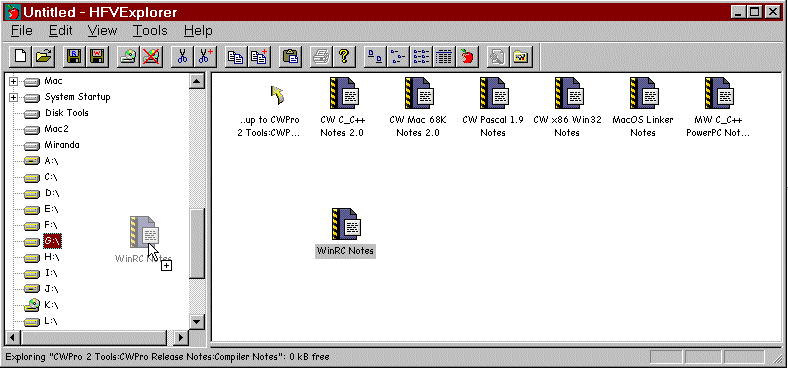
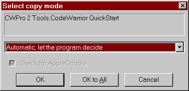

In the picture above, the user has started to drag the file "WinRC Notes" from a Mac volume over the Windows volume "G:\", which is highlighted to indicate where the file would drop if the mouse button was released now. Note the cursor shape. It indicates whether the file will be copied ()or moved (). When you drag and drop within the same volume, a move is assumed by default. When dragging and dropping between different volumes, a copy operation is assumed. Holding the shift (keyboard) key down you can force a move, and holding control key down forces a copy. The cursor is updated accordingly. Control and shift keys were chosen to achieve maximum compatibility with Windows Explorer.
When the mouse button is released, either a copy or move will take place. If the source volume type is different than the target volume type (one being an HFS volume and the other not), file conversions may take place if so specified, or file type mappings, again if so specified.
If the file conversion is performed, it is done silently, without asking you anything. Depending on the settings mentioned above, the file conversion may present you the following dialog:

... and you select the copy mode from the combo box, and click OK
for each individual file or subfolder, or OK to All to use the selected
mode for the rest of the files.